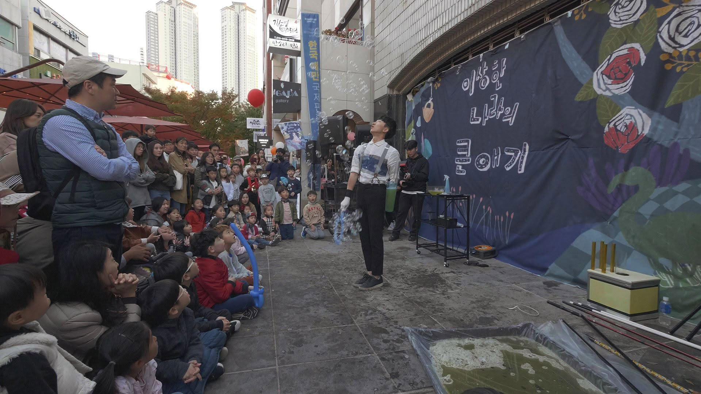
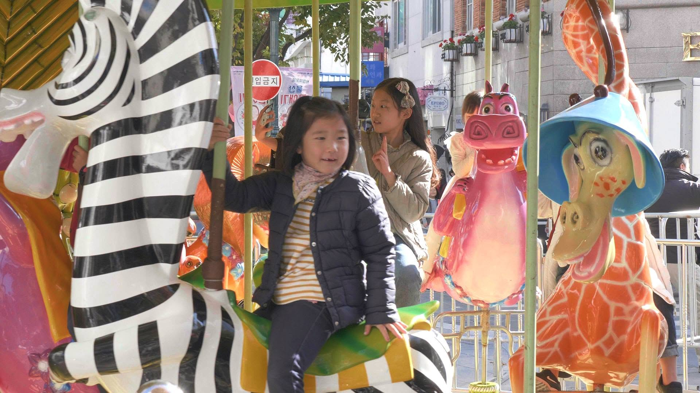
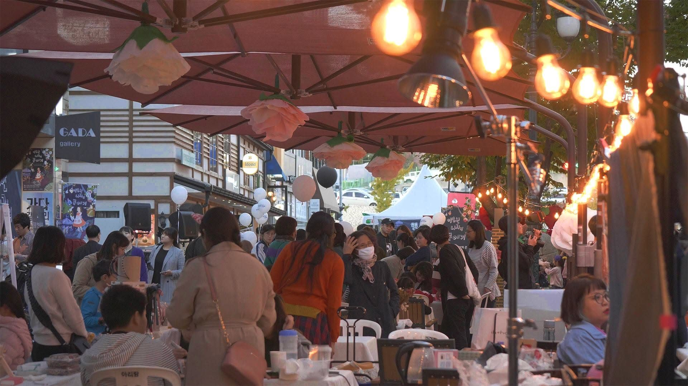
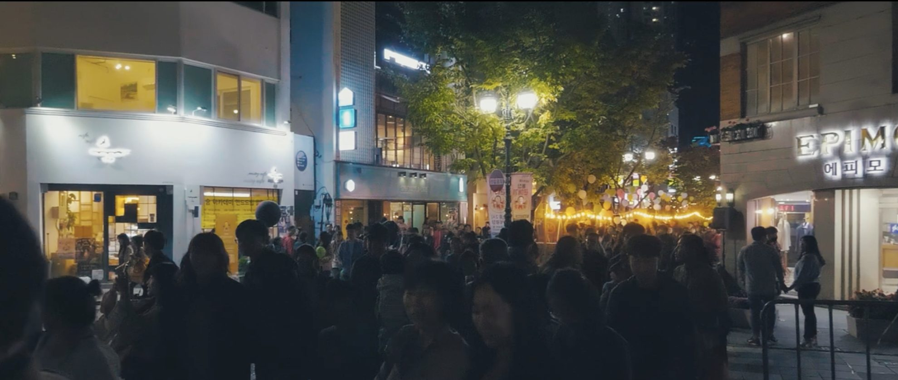
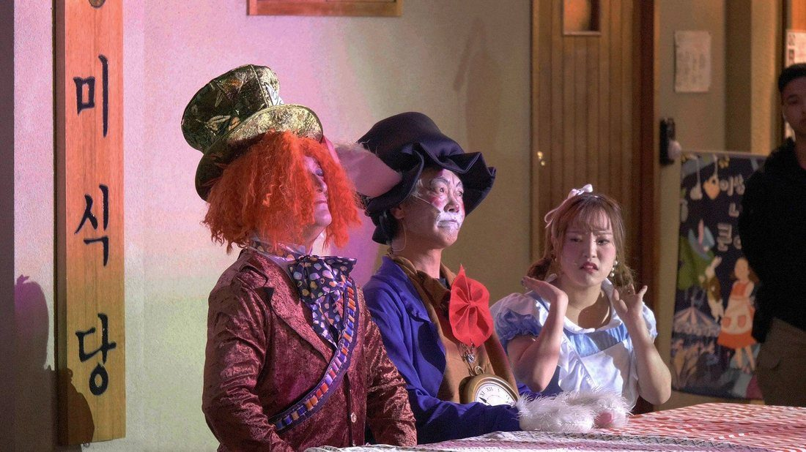

// OVERVIEW
예산 1억 2천만 원으로 울산 중구청의 캐릭터 IP '큰애기'를 활용해 중구 문화의 거리에서 가족 축제를 기획·총감독했습니다. 동화 '이상한 나라의 앨리스'를 모티브로, 길 중앙 회전목마·관객 코스프레 이벤트·동화 이야기 공간 같은 '와우 포인트'로 방문객을 유도했습니다. 중구청, 상가, 공연 예술인, 음향·조명 스태프, 관객까지 촘촘히 소통하며 안전하게 축제를 운영했습니다.
// 목표 & 핵심 지표
발주처 목표
중구청 캐릭터 IP '큰애기'를 활용한 축제 개최
개인 목표
문화의거리로 가족 단위 방문객 유입
핵심 지표방문객 15,000명(울산 인구 1%) · 예산 1억 2천(공공사업)
// 수행 업무
- 축제 총괄 기획 — 조닝·콘텐츠 기획, 창작자 섭외, 가족 중심 프로그램 개발
- 키 비주얼 기획, 홍보물 기획·제작, 메타 광고 집행으로 축제 정보 접근성 향상
- 상인회 협의를 통한 공간 계획, 영상·음향·공연·보안팀 등 밀접한 현장 커뮤니케이션
- 축제·설치물 안전 계획 수립 및 현장 총감독
// 협업 방식
- 중구청발주 협의 및 IP 활용 조율
- 상인회문화의거리 공간 계획 협의
- 창작자공연 예술인 섭외·프로그램 구성
- 기술팀음향·조명·영상·보안팀 현장 운영·안전 계획
담당 범위총감독 — 기획·조닝·섭외·홍보·현장 총괄기여도 100%
// 성과
15,000명
총 방문자 (울산 인구 1%)
대상
2019 지역 공공 캐릭터
// 회고 · 개선
이 축제는 '방문의 해' 예산으로 시작해 2년간 이어졌지만, 해당 사업 예산이 종료되면서 더 지속되지 못했습니다. 방문객 반응과 상권 호응이 좋았고 회전목마 같은 기획 요소는 타 축제에서 벤치마킹될 만큼 검증됐던 만큼, 단발성 예산에 의존하는 구조를 넘어설 방법을 함께 설계했어야 했다고 봅니다. 다시 한다면 큰애기 IP를 연간 콘텐츠와 상권 프로그램으로 잇는 구조를 제안해, 예산 사업이 끝나도 이어지는 형태를 만들었을 것입니다.
// 현장




